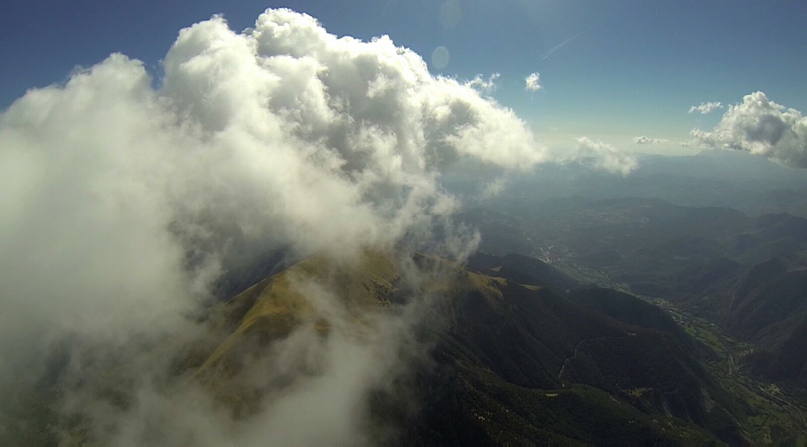
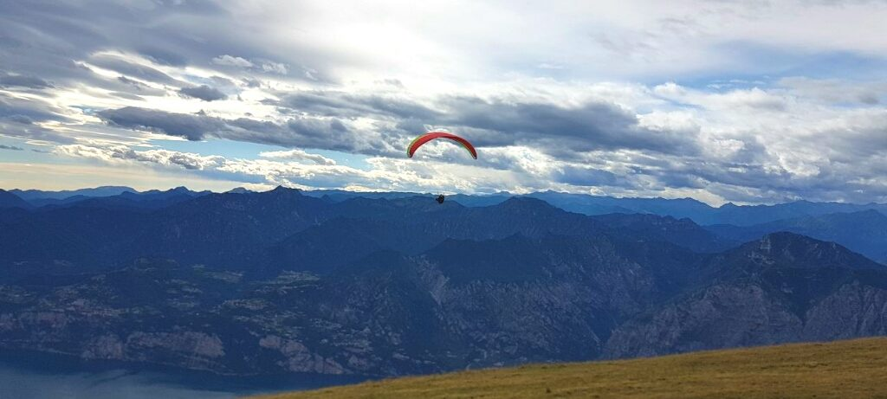
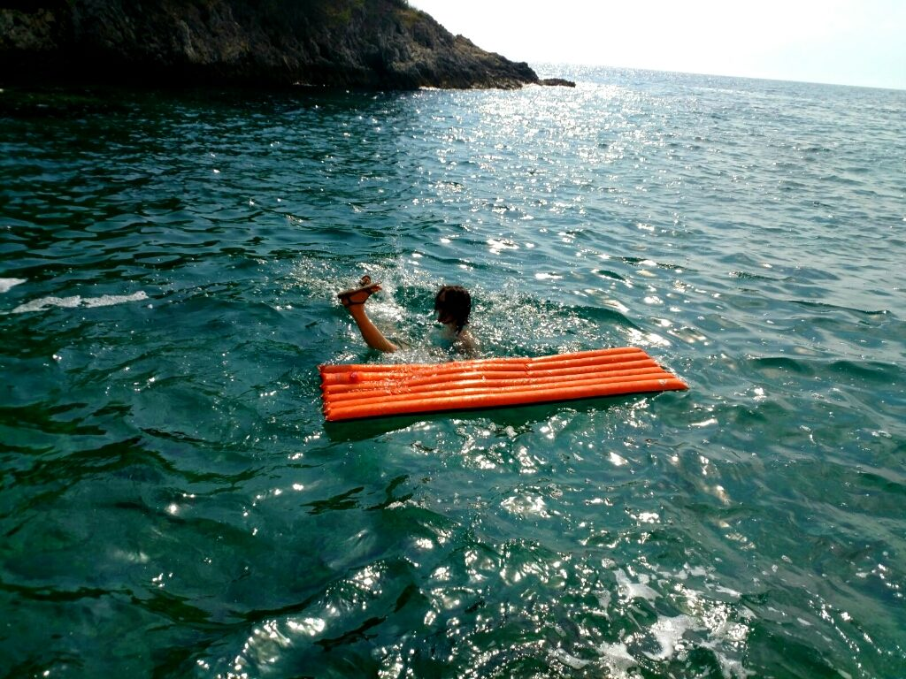
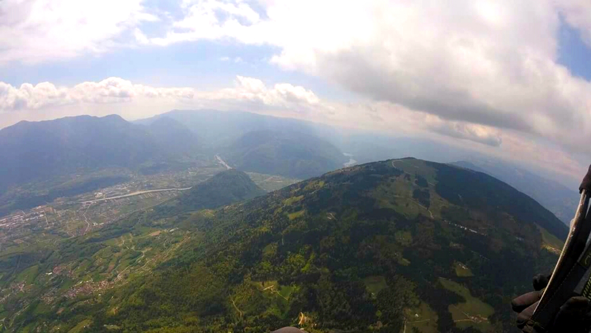

Trza prziznać, że mielimy ruła jak stary grynadier – pół roku zeszło na rychtowaniu filmiku z ôńskigo roku. Ale yntlich je fertich! 🙂 Zapraszōm do oglōndanio landszaftów z luftu – furgani było w Alpach, Pirenejach i Dolomitach.
Pyrsk!
Ślōnski roztomajtości do tych, co przajom ślōnskij godce!

Trza prziznać, że mielimy ruła jak stary grynadier – pół roku zeszło na rychtowaniu filmiku z ôńskigo roku. Ale yntlich je fertich! 🙂 Zapraszōm do oglōndanio landszaftów z luftu – furgani było w Alpach, Pirenejach i Dolomitach.
Pyrsk!

Tym razym na lotani wybralimy sie w Pireneje. Jo fest przaja Hiszpanii i świynty był czas coby tam latoś noreszcie pojechać.
„Szmakuj życi bez aszwōngu”

Piyrszy dziyń furgalimy w Agerze, znanej paralotniowej miejscówce. Loce sie tam przede wszyskim podle długigo łańcucha górskigo ale idzie tyż robić przeskoki. Bez lato pojszodku dnia biyda tam je lotać, tak je ostro w lufcie. Ale na przełomie września i października było już ganc dobrze. A furgać tam szło aż ku nocy, ozim na zygorze a glajty eszcze w lufcie… Urok Hiszpanie 🙂
To już som wysoki góry beztuż ladszafty były ganc zocne. Tenenówkōm wyjechalimy na nojwyższe startowisko – Liri. W aucie dyrgotało niemiłosiernie ale jakoś poszło. A na wyrchu… Ajjj, piyknie było… Szło zocnie oczy napaść!
Oficjalne lōndowisko było kole cyntrum miasteczka, szło sie tam yny 5 minut 🙂 We spōmnianym centrum polecōm szynk la Morera – majōm cołkiym smaczne jedzyni – na ôbiod wszamałach zocne quesadillas.
 Na nastympny dziyń pogoda była kapka niechersko w górach to my sie wybrali na zwiedzani okolice
Na nastympny dziyń pogoda była kapka niechersko w górach to my sie wybrali na zwiedzani okolice
Piyrsze oeowce morza w Cambrils, małej miejscowości podle Tarragony. Niestety miejsce było ganc turystyczne i cyny tyż nie podane do tych na prowincji Katalonie.
Drugo część dnia obsztalowałach jo. Pojechalimy do malućki mieściny Benabarre kaj je szumny zomeczek, klimatyczne wōnski uliczki i firmowy geszeft lokalnej wytwórni czekulady 😀 Miały być tyż roztomajte kyjzy ale jakoś my yny trefiyli na ta czekulada 😉
 Na drugi dziyń uzaś pogoda była bele jako to my poszli w góry, w rejon parku narodowego d’Aiguestortes
Na drugi dziyń uzaś pogoda była bele jako to my poszli w góry, w rejon parku narodowego d’Aiguestortes
Niestety bergbana dziyń pryndzy miała swoja ostatnio rajza w tym sezonie. Trocha my sie majtli ale nic to, na góra wybralimy sie naszym wynajentym fiatym pińcet L. Drōga była szutrowo i dojś niechersko beztuż autko ledwa zipało. Ale dozipało tam a nazot beztuż niniejszym ogłaszom Fiata 500L terenowym odkryciem roku 2017.
 Zocnie my porajtowali po górach a po drodze rōncz my trefiali na stada krów. Zrobiyło sie do kupy 6 godzin chodzynio beztuż w drodze nazot zaczło sie chledani szynku na gibko bo już my mieli fest głód. Ale guzik – wszyndzi yny bocadillos (klapsznity) a kuchynia otwierajōm od 7 na wieczór. Jeronie… Ale yntlich my poradziyli dostać ciepły ôbiod w czwortym pod rzōnd szynku. Ufff, obstolimy jakoś.
Zocnie my porajtowali po górach a po drodze rōncz my trefiali na stada krów. Zrobiyło sie do kupy 6 godzin chodzynio beztuż w drodze nazot zaczło sie chledani szynku na gibko bo już my mieli fest głód. Ale guzik – wszyndzi yny bocadillos (klapsznity) a kuchynia otwierajōm od 7 na wieczór. Jeronie… Ale yntlich my poradziyli dostać ciepły ôbiod w czwortym pod rzōnd szynku. Ufff, obstolimy jakoś.
Na nastympny dziyń zaś my pojechali do Ageru coby noreszcie co pofurgać. Dziyń nie był nojlepszy beztuż za wiela nie polotałach ale dwie godziny w lufcie tyż dobre.

Po drodze było trocha blokad na drogach bo Katalończyki sie burzyli prociw chajōm i ôstudom i jak to przōdzi przez palicajów nie śmieli zagłosować w swoim referendum o autonomia. Ale przejechalimy bez wiykszej starości. Kaj nie kaj ludzie sie zebrali na ulicach i wszyski szynki były zawrzyte. A ku tymu fiesta – szpile i szpasy do bajtli, malowani dzieckōm gymbiczek eli grill z wusztami tyż sie znojd. Nie zawiyrzejcie dycki berichtōm! Larmo w Barcelonie to był wyjōntek – narajzowalimy sie kupa po Katalonii omijajōnc stolica i wszyńdzi było spokojnie. A telewiyzjo jak telewizyjo – breweryje dycki znejdzie.
 W Organyi fest mi sie podobało a tyż polotałach dojś zocnie. Nikaj sie nie wybrałach na przelot bo to był ostatni dziyń rajzy ale i tak było piyknie. Przi okazji szło sie naoglōndać roztomajtych akrobacyji co robiyły inksze piloty bo Organya je takōm europejskōm znanōm miejscówkōm do akro.
W Organyi fest mi sie podobało a tyż polotałach dojś zocnie. Nikaj sie nie wybrałach na przelot bo to był ostatni dziyń rajzy ale i tak było piyknie. Przi okazji szło sie naoglōndać roztomajtych akrobacyji co robiyły inksze piloty bo Organya je takōm europejskōm znanōm miejscówkōm do akro.
 Rajza nazot do Polski okozała sie kapka niefortunno – Brussels Airlines straciyło nasze bambetle – czyli paralotnie
Rajza nazot do Polski okozała sie kapka niefortunno – Brussels Airlines straciyło nasze bambetle – czyli paralotnie
W rugzakach były tyż uprzęże, spadochrony zapasowe i cołko elektronika. Trocha sztresu sie najadłach ale na szczęści klamoty sie znejdły i na wieczór trzecigo dnia miałach nazot moigo Hooczka.
Polecom Pireneje skiż tego że je dziko, pusto a ku typu prowincjo Hiszpanii je ganc łacno. Rajzujcie kiery może!


Paralotniowy kurs bezpieczyństwa chodziył za mnōm już ze dwa lata ale sztyjc coś inkszego sie porobiało i czas uciekoł. Latoś sie wziōnach za sia i noreszcie zapisałach sie na wyjazd. Padło na czesko szkoła el Speedo beztuż że majōm cołkiem dobre opinie.
Potym yny spakować sie roztropnie na rajza i jada!
A jakby kiery był dociyrny to tu szlabikuja o tym jako zaczłach moi przigody z furganiem: Jako sie to wszysko zaczło z tymi paralotniami.

Dzisio drugo czyńść relacje z rajzy Włochy – Słowenia – Chorwacja – Słowenia – Włochy.
Dali go! Rajzy to je fajno rzecz!
Z Chorwacje ruszylimy na Słowenia bo… toć że pogoda. Jeszcze w aucie pozmiynialimy plany i zamiast jechać do Krvavec w końcu decyzja padła na Lijak. Wieczne niedospani, ściorani i fest dużo godzin w aucie dały o sia znać – odpuściyłach lotani bo już byłach rychtyk tołt. Przez to goniyni pogody po Europie zrobiyła sie nom szkoła przetrwanio z tego urlopu 😀 Po połedniu na Lijaku „iberaszong” – zastała nas burza. Ale nic to, zowizo plan już był na Włochy. Jadymy dali 🙂
U Włochów zaczlimy od jeziora Garda. Na początku było ganc niefajnie – pierziński tłok, spaliny i brak miejsca coby kaj zostawić auto. Nieoznaczony dojazd do kolejki na góra plus ogromny wężyk ludzi do kas ganc zniechęcił do tego miejsca. Potym kolejka do wejścio i późnym popołedniym w końcu poradziylimy dostać sie na góra. Na szczęści na Monte Baldo humory sie poprawiyły – było przepiyknie! Ogłaszōm jezioro Garda nojpiykniejszym paralotniowym miejscem w kierym dotąd byłach!
Lądowisko to specjalnie narychtowany skrawek zegródki podle jeziora – trocha człowiek może być wylynkany bo nad wodōm traci sie poczuci wysokości i cyrklowani trudniyj przichodzi. A przynajmniej mi nad wodōm trudniyj 😀 Ale jakoś poszło i wmanewrowałach sie na ląd. Jakiś Włoch przede mnōm ni mioł dobrego cyla, przelecioł lądowisko i skończył w wodzie. Ale na szczęści nic sie nie stało, z uśmiychym potym suszył sie na trowce 🙂
Z Malcesine przemieściylimy sie w okolice miejscowości Canal San Bovo, niedaleko Dolomitów. Zaś prawie 3 godziny w aucie i to nieskoro na wieczór… obiecalimy se że choby nie wiym co, nie bydymy sie już tela przemieszczać. Kożdy był już zajechany i trza było se odpuścić małowiela.
 W okolicy noclegu znejdlimy mało uczęszczane startowisko na górce Tognola (2162m) z piyknymi widokami na Dolomity. Mało ludzi tam loce skuli wiatrów dolinowych i jebliwości w lufcie. Tego dnia było małowiela cirrusa betuż było spokojniej niż dycki i szło odstartować w środku dnia. Po lądowaniu prziszły do mie zwierzęta pasące sie na swoi łączce – mój Hooczek wydoł im sie ganc zocny 🙂
W okolicy noclegu znejdlimy mało uczęszczane startowisko na górce Tognola (2162m) z piyknymi widokami na Dolomity. Mało ludzi tam loce skuli wiatrów dolinowych i jebliwości w lufcie. Tego dnia było małowiela cirrusa betuż było spokojniej niż dycki i szło odstartować w środku dnia. Po lądowaniu prziszły do mie zwierzęta pasące sie na swoi łączce – mój Hooczek wydoł im sie ganc zocny 🙂
 Na drugi dziyń pojechalimy do Feltre bo yny tam miała być pogoda. Spani było na kempingu Arsie nad jeziorem Corlo. Tam spędziylimy ostatni dwa dni tego szalonego urlopu 🙂 Na koniec jak my wyjyżdżali w okolicy nasunył sie frōnt beztuż wyjazd był gynał o czasie. W drodze nazot w Austrii naoglądałach sie zaś przeróżnych congestusów i kowadeł, dzioło sie na niebie… Niestabilno pogoda momy latoś, no ale cóż było robić.
Na drugi dziyń pojechalimy do Feltre bo yny tam miała być pogoda. Spani było na kempingu Arsie nad jeziorem Corlo. Tam spędziylimy ostatni dwa dni tego szalonego urlopu 🙂 Na koniec jak my wyjyżdżali w okolicy nasunył sie frōnt beztuż wyjazd był gynał o czasie. W drodze nazot w Austrii naoglądałach sie zaś przeróżnych congestusów i kowadeł, dzioło sie na niebie… Niestabilno pogoda momy latoś, no ale cóż było robić.
Wyczerpująco to była rajza ale za to było fest ciekawie. Kapryśno pogoda dyktowała wybór miejsc i tak rychtyk z pierwotnych planów nie wyszło praktycznie nic. Alpy Centralne jeszcze muszą doczkać na eksporacjo na prziszły roz jak warun bydzie bardzi sprzyjający.
A tymczasem już sie rychtuja do nastympnej rajzy 🙂 Ale o tym kiedy indzi.

Mioł być tydziyń urlopu ale w końcu stanyło na dwóch. Kto szalōnymu zabroni 😉 Na poczōntek wspominka jako sie to wszysko zaczło z tym furganiym. No a teroz konkrety 🙂
Rajza zaczlimy od północnego Tyrolu, a konkretnie od Speikboden. Piyrszy dzień wioło dojś fest z północy beztuż odpuściylimy furgani. Na drugi dziyń było już lepszy no to heja na góra! Startowisko je na ok. 2400 wiync tak jak lubia – zowdy leko iś na przelot z wyższej górki, ot filozofijo. Na starcie byli też inksi paralotniorze beztuż szło sie dowiedzieć pora lokalnych para-ciekawostek.
 Trocha my odczekali i w końcu wysztartowoł piyrszy zając i sie wykręciył. Jak to dycki – za nim ruszyła reszta. Jo przismyczyłach ze sobą nowe skrzydło na nasz piyrszy wspólny oblot. Bezmała nowego glajta lepszy oblotać na znanej górce ale cóż było robić – mie sztyjc ciągnie ku nowymu. Na szczęści glajcik okozoł sie być przyjazny i zwrotny, leko chodziył za ręką i rozmiarowo je NORESZCIE do mie dopasowany. Żegnejcie klapy, migacze i fronty! Wreszcie mōm dopasowano paralotnia!
Trocha my odczekali i w końcu wysztartowoł piyrszy zając i sie wykręciył. Jak to dycki – za nim ruszyła reszta. Jo przismyczyłach ze sobą nowe skrzydło na nasz piyrszy wspólny oblot. Bezmała nowego glajta lepszy oblotać na znanej górce ale cóż było robić – mie sztyjc ciągnie ku nowymu. Na szczęści glajcik okozoł sie być przyjazny i zwrotny, leko chodziył za ręką i rozmiarowo je NORESZCIE do mie dopasowany. Żegnejcie klapy, migacze i fronty! Wreszcie mōm dopasowano paralotnia!
Zocny to był przelocik, trzimałach sie przede wszyskim na 3ooom betuż widoki były wspaniałe! Ale po przelecyniu 29 km było mi już rychtyk zima… Wylądowałach na łączce i we włoskim upale we wszyskich warstwach ciuchów kiere miałach na sia z ulgą zaczłach robić przisiady coby sie rozgrzoć. Ni ma zmiłuj, zima było pod chmurkom 🙂
Niestety pogoda hned pokrziżowała nom plany i zamiast przenieść sie do Austrie do Zell am See trza było jechać na Słowenia coby uniknyć burz.
Zameldowalimy sie na kempinu w Kobaridzie i nastympne dni lotalimy na Stolu. Tam też z pogodōm było roztomajcie ale koniec końców dziynnie my furgali, choćby z widokiem na ogromne cumulonimbusy kwitnące to tu to tam nad Alpami.
 Na jedna noc zrezygnowalimy z noclegu na kempingu i rozbilimy sie na dziko nad rzykōm Soča. Klimatyczne miejsce i nojfajniejszy nocleg jaki my mieli na tym wyjeździe. Na wieczór my se rozpōlyli fojerka i tak to miło zlecioł czas.
Na jedna noc zrezygnowalimy z noclegu na kempingu i rozbilimy sie na dziko nad rzykōm Soča. Klimatyczne miejsce i nojfajniejszy nocleg jaki my mieli na tym wyjeździe. Na wieczór my se rozpōlyli fojerka i tak to miło zlecioł czas.
Aż w końcu prziszła niepogoda w cołkich Alpach, na Słowenii też. Wartko siedlimy na wieczór nad prognozami i zaczło sie sztudyrowani co tu ze sobom zrobić coby nie oglądać deszczu. No i pojawiył sie ekstrawagancki jak na nas ajnfal – Chorwacja! Dyć tam też locōm! To my sie zebrali i heja.
Lotani było kole miejscowości Buzet na północy półwyspu Istria. Furgo sie tam przede wszyskim podle pasma górskigo na kierym lokalesi robiom ok. 46 km w jedna strōna – cołkiem zocnie.

Hyc był niemiłosierny ale ni ma zmiłuj – locymy! Jo niestety nie poradziyła wiela polotać bo na Chorwacji tyż nas dorwały burze. Było fest termicznie ale cóż, trza było lądować bo chmury robiyły sie coroz straszniejsze. Pora minut po przyziemieniu zaczło grzmieć i kilkanoście km dali przeszła piykno burza z okazałymi Cbekami.
Trza prziznać że downo sie nie naoglądałach tela chmur burzowych co na tym wyjeździe 😀 Piykne to ale lotać przi tym to nie bałdzo…
Na drugi dziyń plōmpsnylimy do morza i piyrszy roz próbowałach snorkelingu z maskami kupionymi spontanicznie tego samego dnia. Fajno sprawa pozaglōndać na rybki i roztomajte stworki morski o kierych ni miałach pojęcia że też sie pluskajom pora metrów pody mną 🙂 Naturalnie po połedniu też nas dogoniyła burza ale na szczęści my już byli w aucie.
Tak to wyglądoł piyrszy tydziyń para-rajzy. Laby mało ale za to ciekawie sie dzioło. Za tydziyń bydzie o tym jako wyglądała reszta wyjazdu 🙂

Zocnie mi sie udała majowo rajza w Alpy. Jak to dycki, wyjazd był paralotniowy, inkszego urlopu se już nie miarkuja. Na wyjazd uzaś pojechałach z grupą Michała Gierlacha, naszego paralotniowego mistrza Polski. Większość rajzy spędzilimy we Włochach, dziepro ostatni dziyń pojechalimy na Słowenia.

Piyrszy dziyń lotalimy w Feltre. Niestety początki okozały sie do mie kapka niefortunne… Przed wyjazdem wyonaczyłach uprząż i rugzak na lekciejsze, na i cóż, okozało sie że tak lotać nie idzie… Była mocno terma i moi skrzidło roncz odstawiało jakiś cyrki. Piyrsze dostałach ogromnego fronta. Potym klapa na ¾ skrzydła. Potym uzaś mega front… Jeszcze nigdy ni miałach takich niecherskości. No i trza było lądować bo to naprowda nie wyglōndało dobrze. Ale sie nie zniechęciyłach, po połedniu wziynach trzi litry wody i odpolyłach jeszcze roz i już było trocha lepszy. Potym już do końca rajzy lotałach z ołowiym od Spike i cztyryma litrami wody…
Mom nadzieja że nie czyto tego mój muter bo jak zaś kiejsik przijada du dōm to sie zacznie bezlitosne futrowani 😉
Potym my pojechali do Bassano, znanej mekki paralotniowej Europy. Tam zrobiyłach mój najdługszy przelot w cołki dotychczasowej karierze paralotniowej – 45km. Ale byłach uradowano! Ni ma to wiela do starych wyjodaczy ale że jo dziepro zaczynōm przelotowe przigody to cieszyłach sie jak bajtel! Superancko 🙂
Niestety prognozy sie popsuły i jedyn dziyń musielimy odpuścić furgani. Wybralimy sie na zwiedzani interaktywnego muzeum przyrodniczego MUSE w Trydencie.
 Gadziny, geologia, geografia i kapka historyje rozmieszczone na pięciu poziomach ganc epnego gmachu. Jak ni ma pogody to spłaco sie wybrać do tego muzeum – sztudyrowanio nigdy dojś!
Gadziny, geologia, geografia i kapka historyje rozmieszczone na pięciu poziomach ganc epnego gmachu. Jak ni ma pogody to spłaco sie wybrać do tego muzeum – sztudyrowanio nigdy dojś!
A propo zwierza, takigo stwora my spotkali na jednym ze startowisk:
 Na nastympny dzień przenieślimy sie w okolice jeziora Garda i prociw niecherskim prognozom, udało sie polotać w miejscowości Brescia. Ni ma jak niespodziewany, spontaniczny wypad na górka 🙂
Na nastympny dzień przenieślimy sie w okolice jeziora Garda i prociw niecherskim prognozom, udało sie polotać w miejscowości Brescia. Ni ma jak niespodziewany, spontaniczny wypad na górka 🙂
W piōntek lotani zaczło sie na Roncola w San Bernardo w okolicy Bergamo. Tu mi nie za bardzo poszło i padłach po 8 km. Na szczęści udało mi sie dostać na górka jeszcze roz i po połedniu już wszysko lepszy działało, poleciałach 14 km i jeszcze se powisiałach na żaglu. Miodzio.
Ostatni dzień pojechalimy na Słowenia na fest znano górka Lijak. Kożdy paralotniorz jōm zno bo je łatwo i przyjemno. Prognozy nie były za fest obiecujące beztuż gibko my sie wyszpeili i drap na start. Powisiałach trocha nad startowiskiem po czym po wykręceniu podstawy postanowiłach sie wybrać na wschód. Reszta ludzi furgała na zachodzie ale koniec końców hned też do mie dołączyli. Niestety zaczło kapka padać i trza było zasztopować lot. Byłach trocha zło bo przeleciałach 19,5 km, yny 500 metrów i by mi stuknęła choć aby ta dwudziestka… no ale i tak dobrze że udało sie co pofurgać tego dnia. Continue Reading…

Dzisio byda dali rozprawiać o moi ostatni rajzie.
Atrakcji turystycznych w Nepalu jakoś nie odnotowałach, mom wrażeni że tam sie jedzie coby pochodzić po górach, lotać na paralotni abo poczuć tyn jedyny w swoim zorcie, miejscowy klimat. Oboczylimy pora miejsc turystycznych i jedyne co mi sie spodobało to był klasztor buddyjski.
Praje my se trefiyli na zajęcia koszykówki młodych mnichów. Continue Reading…

Oj, sie dzioło! Rajza do Nepalu była ganc najciekawszo ze wszyskich moich wypadów do tej pory. Już pora dobrych lot moi urlopy to som wyłącznie wypady paralotniowe no i nie inakszy było tym razym. Continue Reading…

Na La Palma wybrałach sie bo wysztudyrowałach że tam je cołkiym zocne lotani. Miała być Sardynia ale tam już je kapka zima w grudniu beztuż stanyło na Kanarach. Continue Reading…

Fliger miałach do Malagi a stamtōnd grupōm my sie przeniyśli do Algodonales, malućki uroczej miejscowości przi górce z kierej idzie zocnie polotać na paralotni. Bo toć że wypad był paralotniowy, inkszych rajzów narazie nie planuja bo se chca sezon odkuć. Powiym Wom że skuli roztomajtych starości to mało lotałach w tym roku. Za mało!


{kind=link}
{kind=link}
{kind=link}
{kind=link}
{kind=link}
{kind=link}
{kind=link}